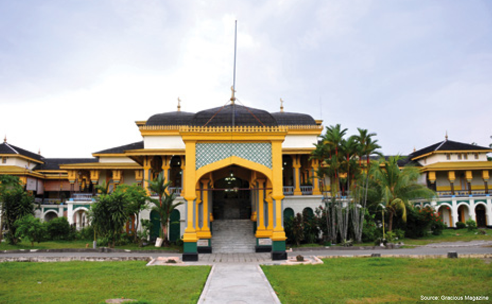

Provinsi Sumatra Utara terletak pada 1° - 4° Lintang Utara dan 98° -
100° Bujur Timur, Luas daratan Provinsi Sumatra Utara 72.981,23 km².
Sumatra Utara pada dasarnya dapat dibagi atas:
Daerah ini beriklim tropis. Pada bulan Mei hingga September, curah hujan ringan. Sedangkan Oktober hingga April, curah hujan relatif lebat akibat intensitas udara yang lembap.
| Utara | : | Provinsi Aceh dan Selat Malaka |
| Selatan | : | Provinsi Riau, Provinsi Sumatra Barat, dan Samudera Indonesia |
| Barat | : | Provinsi Aceh dan Samudera Indonesia |
| Timur | : | Selat Malaka |
bentuk kegiatan rekreasi dan pariwisata yang memanfaatkan potensi sumberdaya alam, baik dalam keadaan alami maupun setelah ada usaha budidaya, sehingga memungkinkan wisatawan memperoleh kesegaran jasmaniah dan rohaniah, men-dapatkan pengetahuan dan pengalaman serta menumbuhkan inspirasi dan cinta terhadap alam